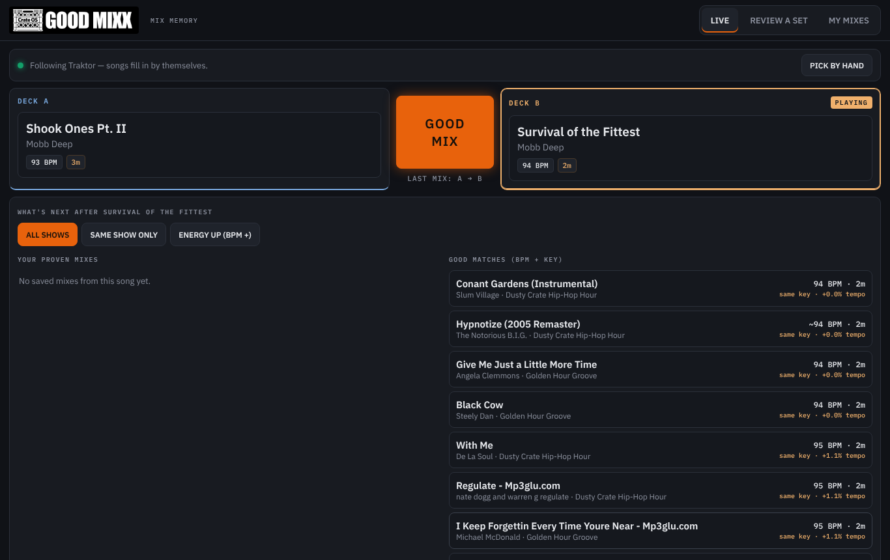

Remember the blends that work.
Ever nail a transition and then forget which two tracks did it? GOOD MIXX follows what you're playing in DJAY or TRAKTOR. Tap GOOD MIX when a blend lands, and next time it puts your proven pairs at the top of what to play next. After the gig, record and rebuild your set in STUDIO and export it as a finished mix.
Free beta. No account. Nothing leaves your Mac.
MIXtap it
Your decks up top. What to play next below.

Live view following TRAKTOR. Songs fill in by themselves, and suggestions list your proven mixes first, then BPM and key matches.
Live, while you play.
Reads your decks
Sees what DJAY Pro or TRAKTOR is playing. No typing. You can switch between the two in one set.
One tap saves a blend
Hit GOOD MIX when two songs work together. Your good pairings pile up gig after gig.
Knows what's next
Shows your proven mixes first, then songs that match on BPM and key. Use an iPad as a second screen if you want.
Record the set. Rebuild it. Make new mixes from it.
Captures how you played
Records your DJAY set as you play: play and pause, deck positions, tempo, faders, crossfader, filter and EQ. It only watches. It never changes anything in DJAY.
Rebuild or remix a set
Recreate a set exactly as you played it, or build a brand-new mix from your saved good mixes or your song list. Beat-matched, set-timing or simple crossfade blends.
Tweak it and export
Fine-tune on a timeline, add blend effects, then export an MP3 or WAV mix, or a playlist file you can load anywhere.
Look back at the night
Go through a set you played and see which blends you saved. Your whole library of proven mixes lives in My Mixes.
Steer what's next
Pull suggestions from all your shows or just this one, or pick Energy Up to see tracks with a higher BPM when you want to lift the room.
Suggestions at arm's length
Open the address from the start screen on an iPad on the same Wi-Fi and keep what's next in view while your laptop runs the decks.
Getting it running
- Download and unzipGrab the GOOD MIXX zip from the download button, then double-click it.
- Drag it to ApplicationsJust like any other Mac app.
- Open it the first timeIt's not from the App Store, so right-click GOOD MIXX and choose Open, then Open again. On newer Macs: System Settings → Privacy & Security → Open Anyway.
- Say yes to Apple's free toolsIf your Mac offers to install its developer tools, let it, then reopen GOOD MIXX.
- Hook up your DJ appDJAY: allow GOOD MIXX under Privacy & Security → Accessibility. TRAKTOR: quit TRAKTOR and double-click Add Traktor Link, then follow the short guide.
- A Mac running DJAY Pro and/or TRAKTOR Pro 3 or 4
- Optional: an iPad on the same Wi-Fi as a second screen
- Optional, for building finished MP3/WAV mixes: ffmpeg (
brew install ffmpeg). Saving playlists works without it.
Stuck? The full install guide has every detail.
Play a set with it. Tell me what broke.
I'm looking for five Mac-based DJs to use GOOD MIXX for real and tell me what works, what's confusing, and what needs fixing. Rough notes are perfect.
Easiest way to reach me: DM @djhellojoey on Instagram.